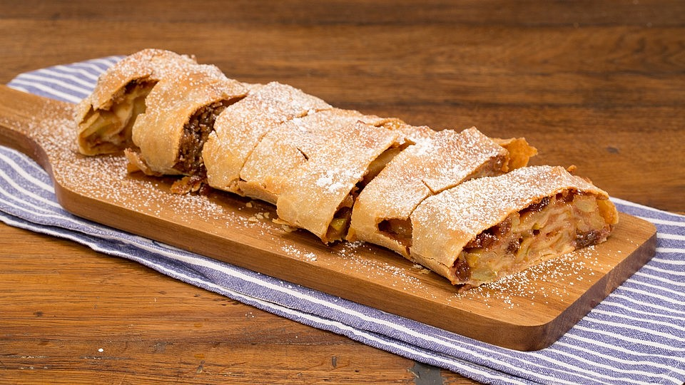
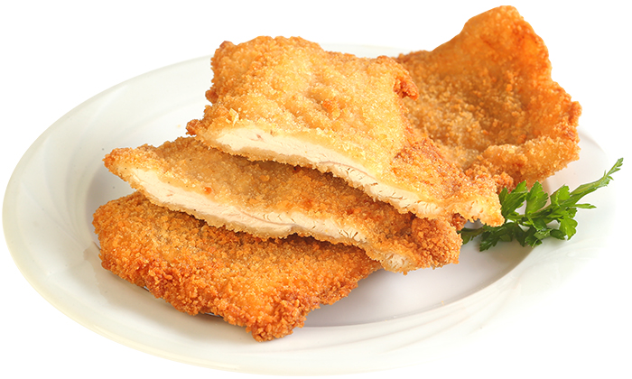
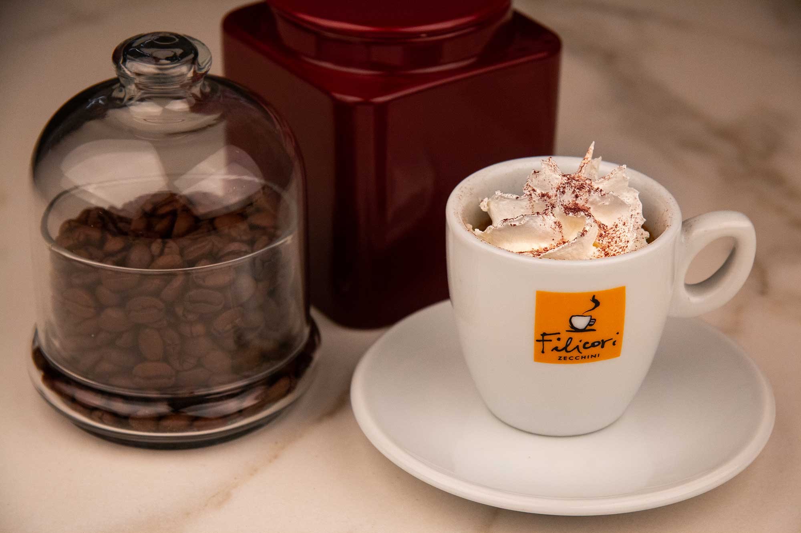

VIENA
Unul dintre cele mai frumoase orașe din Europa
Site menu:
De neratat în Viena
Se știe că dacă ajungeți în Viena trebuie să încercați Apfelstrudel.
Nu trebuiesc ratați nici cârnații pe care îi găsim la chioșcurile de pe străzile Vienei, kasekreiner, un tip de cârnați cu bucățele de brânză înăuntru.

Cel mai cunoscut fel de mâncare vienez este cu siguranță șnițelul vienez (wiener schnitzel).
Nu uitați să comandați si o cafea dacă ajungeți prin Viena.
